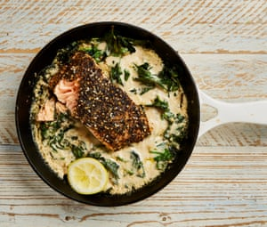

Za’atar salmon baked in tahini

The combination of tahini and fish will be a treat to those who haven’t tried it before. I like creamy, runny, nutty tahini, which in the UK is usually imported from Lebanon, Palestine or Israel, so try to seek it out. Eat this just as it is or with some bread to mop things up.
Heat the oven to 240C (220C fan)/465F/gas 9. Pat dry the fish and sprinkle with salt and pepper. In a small bowl, combine the za’atar and sumac, then sprinkle all over the top of the salmon to create a crust.
Put a medium-sized, ovenproof frying pan (about 18cm in diameter) on a medium-high heat and add a tablespoon of oil. Once hot, add the spinach and a small pinch each of salt and pepper, and cook until just wilted – about 90 seconds to two minutes. Lay the salmon skin side down on top of the spinach, drizzle the remaining tablespoon of oil over the flesh side and transfer the pan to the oven for five minutes.
While the fish is cooking, whisk the tahini with a tablespoon of lemon juice, the garlic, a good pinch of salt and 45ml of water in a small bowl, until smooth and quite runny.
When the fish’s time is up, remove it from the oven, pour the tahini mixture all around (but not over) the salmon, and return the pan to the oven for another five minutes, or until the fish is cooked through and the tahini is bubbling. Spoon over the remaining half-tablespoon of lemon juice and serve straight from the pan.